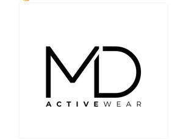

Trade Mark Journal No.2026/001 2 January 2026
UK00004311287 16 December 2025 (25)

- Class 25
- Gymwear; Sportswear; Playsuits [clothing]; Shoes for leisurewear; Men's clothing; Swimwear; Loungewear; Men's underwear; Casualwear; Sweat-absorbent underwear; Knitwear [clothing]; Maternity leggings; Leisurewear; Triathlon clothing; Leggings [trousers]; Ready-to-wear clothing; Tracksuits; Sweat-absorbent underclothing [underwear]; Gym shorts; Athletic clothing; One-piece playsuits; Shorts [clothing]; Jogging bottoms [clothing]; Anti-sweat underwear; Underwear (Anti-sweat -); Jogging outfits; Bandeaux [clothing]; Menswear; Moisture-wicking sports bras; Moisture-wicking sports pants; Denims [clothing]; Sneakers [footwear]; Shapewear; Swimsuits; Men's dress socks; Clothing for leisure wear; Outerwear; Maillots [hosiery]; Sports garments; Athletic footwear; Clothing for gymnastics; Athletic tights; Water-resistant clothing; Sweatshorts; Gabardines [clothing]; Men's sandals; Bodysuits; Sweat-absorbent underclothing; Baselayer bottoms; Jackets being sports clothing; Beachwear; Nappy pants [clothing]; Maternity sleepwear; Moisture-wicking sports shirts; Bralettes; Sweatpants; Corsets [clothing, foundation garments]; Clothing for cycling; Knitwear; Headbands [clothing]; Headbands for clothing; Gilets; Rainproof clothing; Gym boots; Waterproof clothing; Windproof clothing; Yoga shirts; Underclothing (Anti-sweat -); Anti-sweat underclothing; Leotards; Sweat-absorbent socks; Nightwear; Baselayer tops; Yoga shoes; Clothing for sports; Sports clothing; Maternity clothing; Dance clothing; Clothing for wear in judo practices; Sneakers; Tracksuit tops; Cashmere clothing; Tracksuit bottoms; Sleepwear; Footwear; Gym suits; Maternity underwear; Maternity lingerie; Bottoms [clothing]; Clothes for sports; Maternity shorts; Clothing; Footwear for sports; Sports footwear; Trainers [footwear]; Sleeveless pullovers; Skorts; Athletics footwear; Men's suits; Jogging sets [clothing]; Clothes for sport; Footwear for sport; Footwear for use in sport; Gussets for leotards [parts of clothing]; Jockstraps [underwear]; Jackets [clothing]; Oilskins [clothing]; Men's socks; Leisure footwear; Tops [clothing]; Parts of clothing, footwear and headgear; Surfwear; Apres-ski shoes; Yoga pants; Monokinis; Leisure clothing; Gloves for apparel; Quilted jackets [clothing]; Pumps [footwear]; Jerseys [clothing]; Gymnastic shoes; Boardshorts; Sports bras; Wristbands [clothing]; Sports pants; Corsets [foundation clothing].
MD Activewear Limited